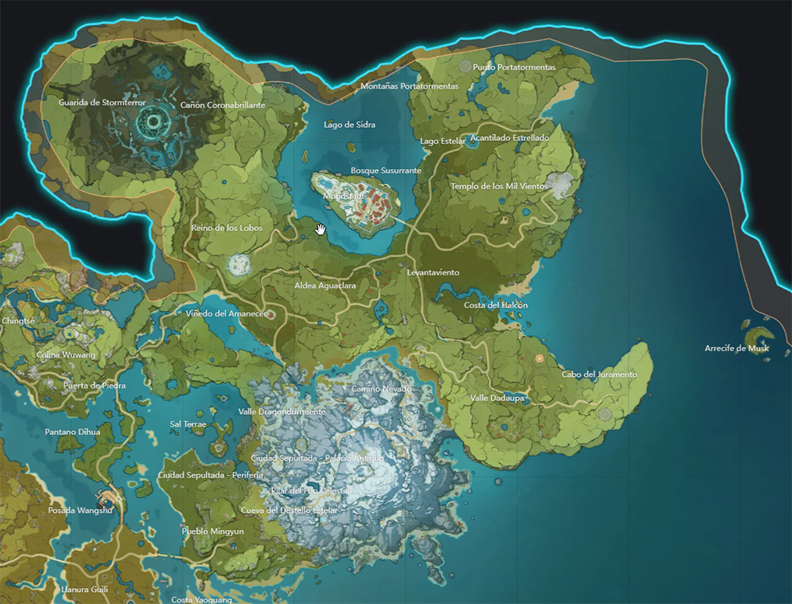

Mondstadt
La Capital de la Libertad al noreste de Teyvat. Entre cadenas montañosas y planicies amplias, el viento de libertad trae consigo el aroma de diente de león y acaricia el Lago de Sidra, llevando a la ciudad en medio del lago la bendición y el favor de Barbatos.
Curiosidades
- Mondstadt considera que sus características son los Dientes de León, el vuelo y el Vino, siendo de las muy pocas cosas que Mondstadt aprendió del arconte del viento para erigir la ciudad.
- Las rosas en Mondstadt, no representa amor, sino un dicho popular que dice “Mis labios están sellados como una botella en la que se guarda una rosa”, que hace significado a guardar los secretos de los demás.
- Gente de Liyue a menudo suelen hacer burlas hacia Mondstadt por ser una ciudad sin reglas, y consideran que su dios la abandonó, mostrándonos así el contraste entre la libertad en contra de la reglamentación. También la gente de Liyue no están al tanto de porque el arconte Anemo decidió no imponer su mandato en Mondstadt, lo cual nos muestra que cada nación tiene su propio punto de vista.
- Según distintos ciudadanos, los molinos de viento fueron erigidos en los lugares donde descendió y pisó el Arconte Anemo.
- Antiguamente, la moneda local de la región de Mondstadt, antes de la distribución de las Moras, era una conocida como Taele.